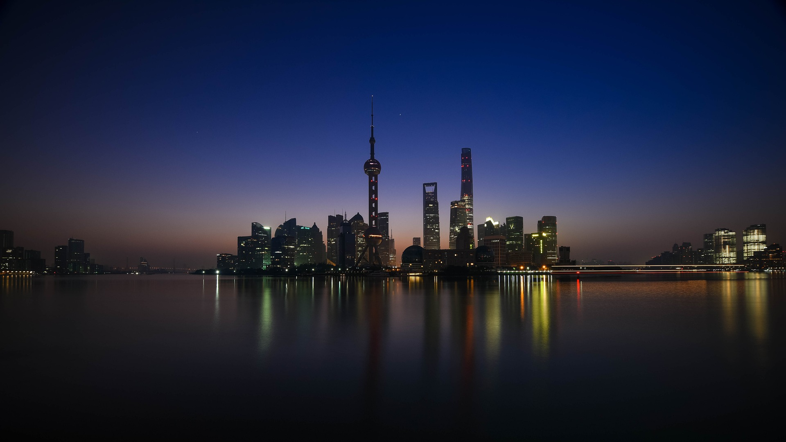
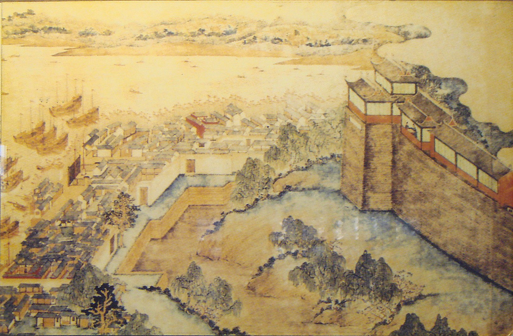
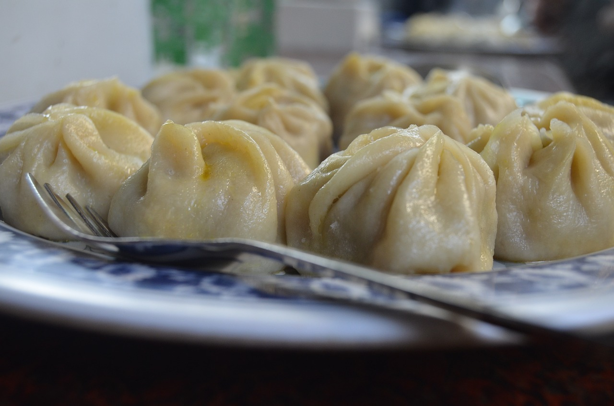
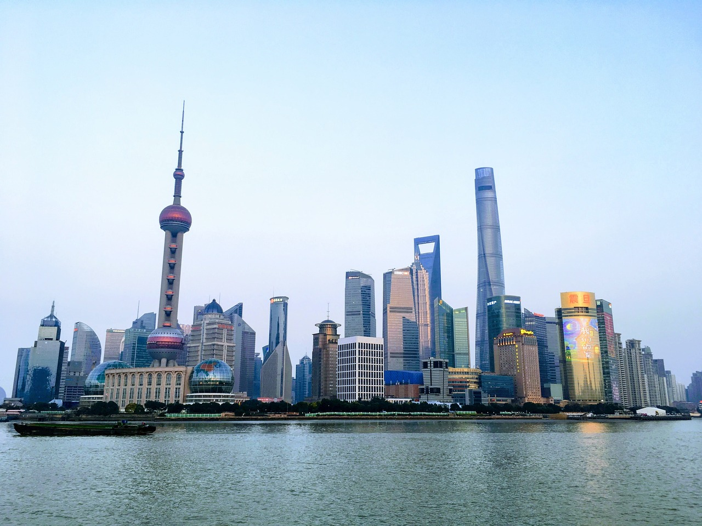
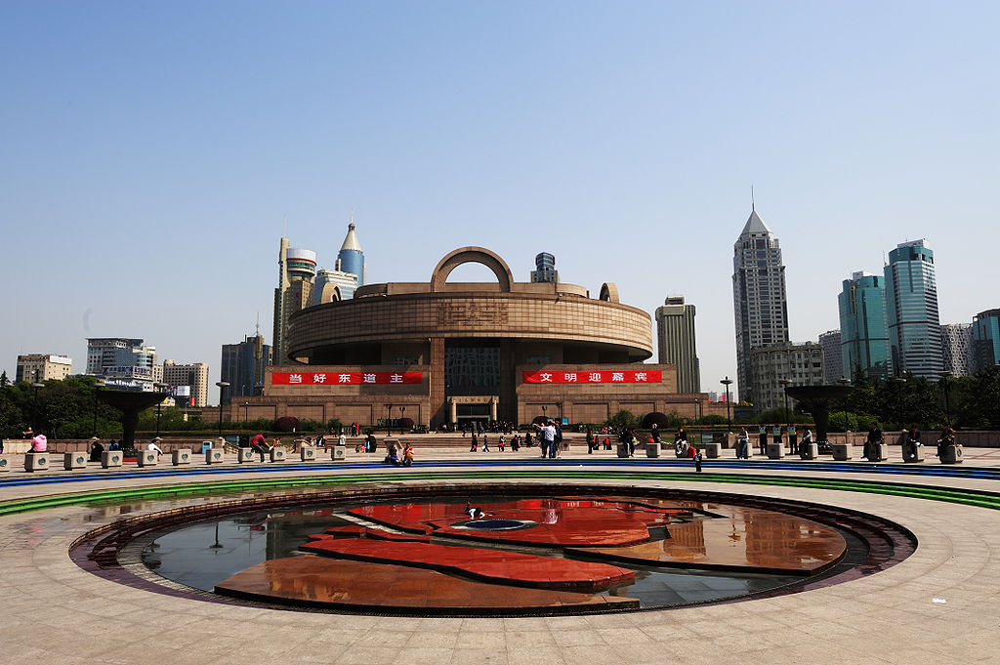
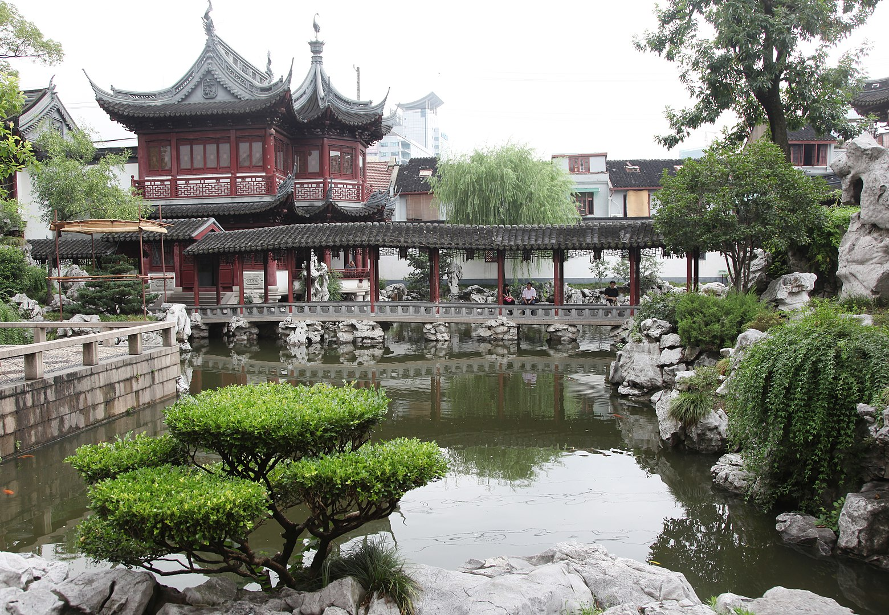
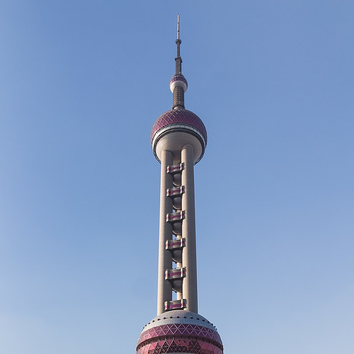
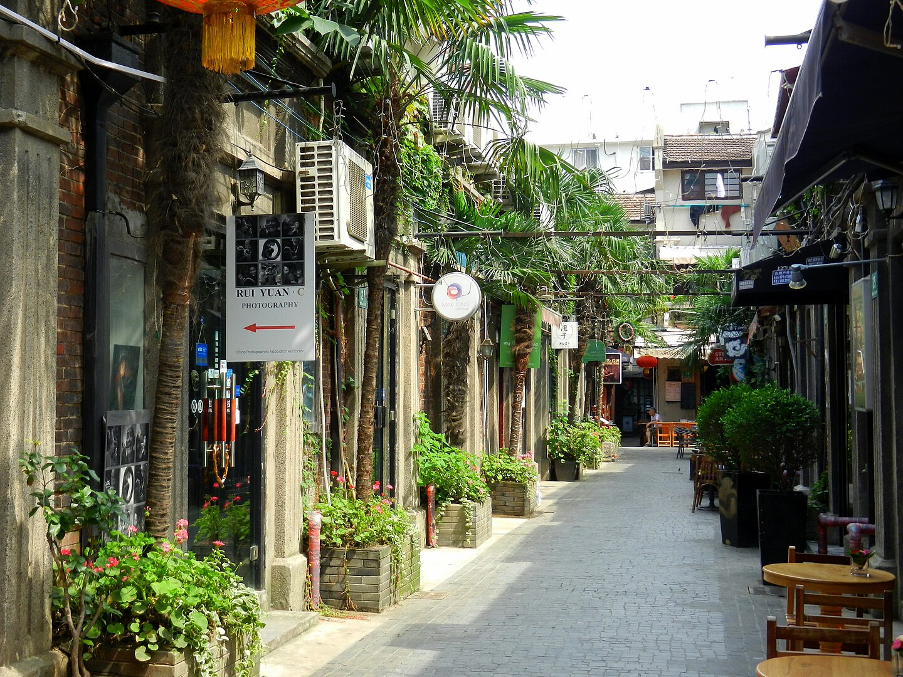

Szanghaj - megalopolis Chin
Szanghaj, jedno z największych i najbardziej dynamicznych miast Chin, jest globalnym centrum finansowym, handlowym, kulturalnym i technologicznym. Miasto łączy nowoczesność z głęboko zakorzenioną historią i tradycjami, tworząc fascynującą mieszankę, która przyciąga miliony turystów rocznie. Oto szczegółowy opis historii, kultury i atrakcji Szanghaju.
Historia Szanghaju
Szanghaj ma długą i bogatą historię, sięgającą czasów starożytnych Chin. Jego rozwój, szczególnie od XIX wieku, wpłynął na jego obecny status jako jednego z najważniejszych miast na świecie.
Starożytność i średniowiecze: Pierwsze wzmianki o Szanghaju pochodzą z okresu dynastii Tang (618-907), kiedy miasto było małą osadą rybacką. W okresie dynastii Song (960-1279) Szanghaj zaczął rozwijać się jako port handlowy. Jednak to w okresie dynastii Ming (1368-1644) miasto zaczęło przyciągać uwagę jako ważny ośrodek handlowy i rybacki.
Wpływy kolonialne (XIX w.): W XIX wieku, po wojnach opiumowych, Szanghaj stał się jednym z pierwszych miast w Chinach, które zostały otwarte na handel międzynarodowy. W wyniku traktatu nankińskiego z 1842 roku, miasto stało się jednym z tzw. „portów otwartych”, co doprowadziło do powstania kilku dzielnic międzynarodowych, kontrolowanych przez Brytyjczyków, Amerykanów i Francuzów. Okres ten miał ogromny wpływ na rozwój miasta, zarówno pod względem architektonicznym, jak i gospodarczym.
XX wiek i reformy: Po upadku cesarstwa Qing i obaleniu dynastii w 1912 roku, Szanghaj kontynuował swój rozwój, stając się jednym z najważniejszych centrów finansowych i handlowych w Azji. W latach 30. XX wieku miasto przeżywało okres wielkiego rozwoju, a jego różnorodność kulturowa była jednym z jego znaków rozpoznawczych. Po rewolucji kulturalnej i zmianach w 1949 roku, Szanghaj stał się centrum przemysłowym w Chińskiej Ludowej Republice.
Współczesność: Od lat 80. XX wieku, kiedy Chiny rozpoczęły proces reform i otwarcia, Szanghaj przeszedł ogromną transformację. Został uznany za jedno z najważniejszych centrów finansowych i handlowych świata. Jego panorama, pełna nowoczesnych wieżowców, symbolizuje rosnącą potęgę gospodarczą Chin.
Kultura Szanghaju
Kultura Szanghaju jest mieszanką tradycji chińskich i wpływów zachodnich, które ukształtowały miasto przez stulecia. Miasto jest centrum kulturalnym, oferującym bogatą ofertę w zakresie sztuki, teatru, muzyki, kina i kuchni.
Sztuka i teatr: Szanghaj jest jednym z głównych ośrodków kulturalnych Chin. Miasto ma wiele teatrów, galerii sztuki i muzeów, takich jak Szanghajskie Muzeum Sztuki Współczesnej czy Teatr Narodowy Szanghaju. Szanghaj jest także domem dla chińskiego kina, a coroczny Międzynarodowy Festiwal Filmowy w Szanghaju jest jednym z najważniejszych wydarzeń filmowych w Azji.
Kuchnia: Szanghaj jest znany z wyjątkowej kuchni, która różni się od innych regionów Chin. Najbardziej charakterystycznym daniem jest xiao long bao – małe pierożki z mięsem i bulionem, które są gotowane na parze. Szanghajczycy słyną również z jedzenia sheng jian bao (pierogi smażone na patelni) oraz szerokiej gamy owoców morza. Miasto ma także wielką tradycję picia herbaty, a tradycje herbaciane są w Szanghaju niezwykle żywe.
Moda i styl życia: Szanghaj jest również uznawany za stolicę mody w Chinach. Miasto jest pełne luksusowych sklepów, butików oraz designerów, a jego ulice pełne są nowoczesnych centrów handlowych, które oferują najnowsze kolekcje. W Szanghaju odbywają się także liczne pokazy mody, przyciągające projektantów i miłośników mody z całego świata.
Atrakcje
Szanghaj jest miastem pełnym kontrastów, gdzie nowoczesne wieżowce spotykają się z tradycyjnymi ulicami. Oto kilka z najważniejszych atrakcji turystycznych:
Bund to słynna nadmorska promenada, która jest jednym z najbardziej rozpoznawalnych miejsc w Szanghaju. Znajduje się tu kolekcja kolonialnych budynków z początku XX wieku, które świadczą o historycznych wpływach zachodnich na miasto. Z Bundu rozciąga się również wspaniały widok na nowoczesne wieżowce dzielnicy Pudong, takie jak Shanghai Tower czy Jin Mao Tower.
Szanghajskie Muzeum to jedno z najważniejszych muzeów w Chinach, którego zbiory obejmują bogatą kolekcję sztuki chińskiej, w tym ceramikę, malarstwo, rzeźby, zbroje, a także skarby z epoki dynastii Ming i Qing. Muzeum jest także wspaniałym przykładem nowoczesnej architektury.
Yuyuan to tradycyjny chiński ogród w centrum miasta, który został założony w XVI wieku. Jest to jedno z najpiękniejszych miejsc w Szanghaju, gdzie można podziwiać klasyczną chińską architekturę ogrodową, stawy, mostki i pawilony. Wokół ogrodu znajduje się również tętniąca życiem dzielnica, pełna sklepów z pamiątkami i tradycyjnymi chińskimi wyrobami.
Orientalna Perła jest jedeną z najbardziej ikonicznych budynków w Szanghaju. Wieża o wysokości 468 metrów oferuje wspaniały widok na miasto z tarasu widokowego oraz obrotowej restauracji. To jedno z najlepszych miejsc do podziwiania panoramy miasta, szczególnie w nocy, gdy Szanghaj świeci tysiącem świateł.
Tian Zi Fang to artystyczna dzielnica w Szanghaju, pełna wąskich uliczek, małych sklepów, galerii sztuki i restauracji. Jest to doskonałe miejsce, by poczuć tradycyjny, lokalny klimat miasta, z licznymi sklepami sprzedającymi rękodzieło, a także małymi kawiarenkami i warsztatami artystów.
Mapa Szanghaju